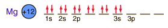

Magnesium
Magnesium is a very light metal. Only calcium and the alkali metals are lighter. This low density is used to advantage in alloys like magnalium (10% magnesium, 90% aluminum).
Magnesium reacts with boiling water to form magnesium hydroxide and hydrogen gas.
The metal burns in air with a bright white light, leading to application in flares. Magnesium powder and an oxidizing agent is used as flash powder.
Magnesium oxide, MgO is called magnesia and is used medically for neutralizing excess stomach acid and as a laxative ("milk of magnesia" is MgO in water).
Magnesium sulfate, MgSO4.7H2O is called Epsom salt and is used as a cleansing agent.
Magnesium is a key component in chlorophyll, the molecule in green plants which helps transform sunlight and carbon dioxide into water and sugar.
Magnesium is the final member of the big 8 elements in the Earth's crust, being the eighth most abundant element at about 2.1% by weight. Magnesium is contained in the carbonate minerals dolomite, CaMg(CO3)3, magnesite MgCO3 and artenite Mg2CO3(OH)2.3H2O. It appears with iron in the carbonate pyroaurite and in the mineral Hulsite. It appears with boron in the fibrous mineral Szaibelyite. Magnesium is found with boron in the oxide minerals inderite and kurnakovite. It appears with copper in the carbonate mineral Callaghanite. The compound with boron is called boracite. With aluminum it forms the oxide mineral spinel. It forms an oxide along with manganese and other metals in the mineral birnessite. Magnesium forms the hydroxide Mg(OH)2 which in mineral form is called Brucite.
Magnesium appears in the carbonate mineral Benstonite.
Magnesium appears with zinc and arsenic in the silicate mcgovernite. Magnesium, along with iron, is a constituent of the fibrous silicate minerals which were collectively given the commercial name asbestos. Those minerals include tremolite, riebeckite and grunerite. Another fibrous magnesium silicate without iron is chrysotile. Another silicate of magnesium is talc, Mg3Si3O10(OH)3. As the ingredient of baby powders and other talcum products, it certainly has a more benign image than those magnesium silicates which make up asbestos.
Magnesium silicate of composition MgSiO3 occurs in the mineral form enstatite which is sometimes of gem quality. The mineral forsterite, Mg2SiO4, is used for green gems. Magnesium with calcium forms the gem mineral diopside which has the composition CaMgSi2O6. Magnesium appears with manganese and arsenic in the silicate Ardennite.
Magnesium appears with aluminum and iron in the phosphate lazulite . Magnesium, iron and manganese form the phosphate mineral ludlamite.

|